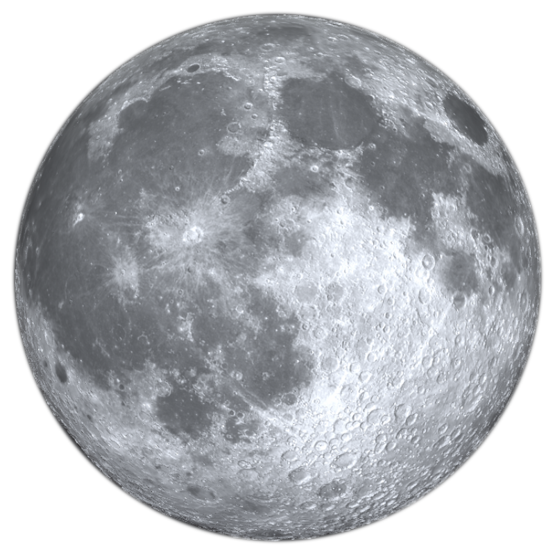

<!DOCTYPE html>
<html>
<head>
  <meta charset="utf-8"/>
  <meta name="viewport" content="width=device-width,initial-scale=1,maximum-scale=1,minimum-scale=1,user-scalable=0"/>
  <title>曦和失焰</title>
  <link href="style.css" media="all" rel="stylesheet"/>
  <style>
    html, body{
      margin:0;
      padding:0;
      width:100%;
      height:100%;
      background:#000000;
      overflow:hidden;
    }

    #bg{
      position:absolute;
      left:0;
      top:0;
      width:100%;
      height:100%;
      background:#000;
      opacity:0;
    }

    #test{
      /*opacity:0.8;*/
    }

    #test, canvas{
      position:absolute;
      left:0;
      top:0;
      margin:0;
      width:100%;
      height:100%;
      background:none;
      box-shadow:none;
    }

    canvas{
      /*transform:translateY(-15%);*/
    }
  </style>
</head>
<body>
<div id="test"></div>
<pre><code class="brush:csx"></code></pre>
<script>
  function initShaders(gl, vshader, fshader) {
    let program = createProgram(gl, vshader, fshader);
    if (!program) {
      console.error('无法创建程序对象');
      return false;
    }

    gl.useProgram(program);

    return program;
  }

  /**
   * Create the linked program object
   * @param gl GL context
   * @param vshader a vertex shader program (string)
   * @param fshader a fragment shader program (string)
   * @return created program object, or null if the creation has failed
   */
  function createProgram(gl, vshader, fshader) {
    // 创建着色器对象
    let vertexShader = loadShader(gl, gl.VERTEX_SHADER, vshader);
    let fragmentShader = loadShader(gl, gl.FRAGMENT_SHADER, fshader);
    if (!vertexShader || !fragmentShader) {
      return null;
    }

    // 创建程序对象
    let program = gl.createProgram();
    if (!program) {
      return null;
    }

    // 为程序对象分配顶点着色器和片元着色器
    gl.attachShader(program, vertexShader);
    gl.attachShader(program, fragmentShader);

    // 连接着色器
    gl.linkProgram(program);

    // 检查连接
    let linked = gl.getProgramParameter(program, gl.LINK_STATUS);
    if (!linked) {
      let error = gl.getProgramInfoLog(program);
      console.error('无法连接程序对象: ' + error);
      gl.deleteProgram(program);
      gl.deleteShader(fragmentShader);
      gl.deleteShader(vertexShader);
      return null;
    }
    return program;
  }

  /**
   * 创建着色器对象
   * @param gl GL context
   * @param type the type of the shader object to be created
   * @param source shader program (string)
   * @return created shader object, or null if the creation has failed.
   */
  function loadShader(gl, type, source) {
    // 创建着色器对象
    let shader = gl.createShader(type);
    if(shader == null) {
      console.error('无法创建着色器');
      return null;
    }

    // 设置着色器源代码
    gl.shaderSource(shader, source);

    // 编译着色器
    gl.compileShader(shader);

    // 检查着色器的编译状态
    let compiled = gl.getShaderParameter(shader, gl.COMPILE_STATUS);
    if(!compiled) {
      let error = gl.getShaderInfoLog(shader);
      console.error('Failed to compile shader: ' + error);
      gl.deleteShader(shader);
      return null;
    }

    return shader;
  }
</script>
<script type="text/jsx">
  // karas.debug = 1;
  const W = document.body.clientWidth, H = document.body.clientHeight;
  let dom = document.querySelector('#test');

  class $custom extends karas.Geom {
    calContent() {
      return true;
    }
    render(renderMode, ctx, dx, dy) {
      let res = super.render(renderMode, ctx, dx, dy);
      if(renderMode === karas.mode.WEBGL) {
        let gl = ctx;
        if(!this.__initShader) {
          this.__initShader = true;
          let vSource = `#version 300 es
layout(location = 0) in vec4 position;
out vec2 fragCoord;
void main() {
  fragCoord = position.xy;
  gl_Position = position;
}`;
          let fSource = `#version 300 es

#ifdef GL_ES
precision mediump float;
#endif

in vec2 fragCoord;
uniform vec2      iResolution;           // viewport resolution (in pixels)
uniform float     iTime;                 // shader playback time (in seconds)
uniform float     iTimeDelta;            // render time (in seconds)
uniform int       iFrame;                // shader playback frame
uniform float     iChannelTime[4];       // channel playback time (in seconds)
uniform vec3      iChannelResolution[4]; // channel resolution (in pixels)
uniform vec4      iMouse;                // mouse pixel coords. xy: current (if MLB down), zw: click
// uniform samplerXX iChannel0..3;          // input channel. XX = 2D/Cube
uniform vec4      iDate;                 // (year, month, day, time in seconds)
uniform float     iSampleRate;           // sound sample rate (i.e., 44100)

// returns a random number
float hash(vec2 p) {
  return fract(sin(dot(p,vec2(12.9898,78.2333)))*43758.5453123);
}

// return a noise value in a 2D space
float noise(vec2 st) {
    vec2 i = floor(st);
    vec2 f = fract(st);
    vec2 u = f*f*(3.0-2.0*f);
    return mix( mix( hash( i + vec2(0.0,0.0) ),
                     hash( i + vec2(1.0,0.0) ), u.x),
                mix( hash( i + vec2(0.0,1.0) ),
                     hash( i + vec2(1.0,1.0) ), u.x), u.y);
}

// returns a fractal noise in a 2D space
float fbm ( vec2 p ) {
    // rotation matrix to spin the noise space and remove axial bias
    mat2 m = mat2(0.8,0.6,-0.6,0.8);

    float f = 0.0;
    f += 0.5000*noise ( p ); p*=m*2.02;
    f += 0.2500*noise ( p ); p*=m*2.04;
    f += 0.1250*noise ( p ); p*=m*2.03;
    f += 0.0650*noise ( p ); p*=m*2.01;
    // normalize f;
    f /= 0.9375;
    return f;
}

vec4 mainImage( out vec4 fragColor, in vec2 fragCoord ) {
  vec2 p = fragCoord;
  p.x *= iResolution.x / iResolution.y;

  float r = sqrt( dot(p,p) ) * 0.5; // radius

  // abs is to fix the -pi/pi discontinuity in atan and noise artifact
  float a = atan( p.y, abs(p.x) ); // angle

  vec3 color = vec3(0.,0.,0.001);
  float anim = iTime*0.7;

  // red burn
  float f = 1.0 - smoothstep(0.2,0.45, r);
  color = mix(color, vec3(0.47,0.11,0.09), f);

  // shine
  // f = smoothstep(0.4, 0.3, 2.0 * length(p - vec2(0.1,0.1)));
  color += vec3(1.0,0.85,0.68) * f ;

  // angular distortion
  float aa = a + 0.2 * fbm (15.0*p);

  // heat
  f = smoothstep(0.2, .45, r);
  color = mix(color, vec3(0.210,0.093,0.020), f*fbm(vec2(10.0*r-anim,10.0*aa)));

  // dissipation
  f = smoothstep(0.40, .5, r);
  color = mix(color, vec3(0.0,0.0,0.001),f);/**/

  // radius of the sun
  float rs = fbm(vec2(20.0*r-anim,15.0*aa));

  // sun
  f = 1.0 - smoothstep(0.28,0.3+(rs*0.005), r);
  color = mix(color, vec3(0.9,0.8,0.490), f);

  // corona
  f = 1.0 - smoothstep(0.22, .42, r);
  color = mix(color, vec3(0.965,0.750,0.008), f*rs);

  // sun center
  f = 1.0 - smoothstep(0.1,0.4+(rs*0.005), r);
  color = mix(color, vec3(0.98,0.85,0.590), f * 0.3);

  // moon
  // f = smoothstep(0.29,0.3,r);
  // color *= f;

  // flare
  f = smoothstep(2.5, 1.2, 2.0 * length(p));
  color += vec3(.9,0.7,0.0) * 0.3 * f ;

  // atmosphere
  color = mix(color, vec3(.9,0.8,0.6), smoothstep(0.4,1.0,r)*0.2*fbm(vec2(4.1*r-anim,25.*(a+0.2 * fbm (3.0*p)))) * 0.3);

  return vec4(color,1.0);
}

out vec4 color;

void main() {
  color = mainImage(color, fragCoord);
}`;
          this.__shader = initShaders(gl, vSource, fSource);
        }
        gl.useProgram(this.__shader);
        let pointBuffer = gl.createBuffer();
        gl.bindBuffer(gl.ARRAY_BUFFER, pointBuffer);
        gl.bufferData(gl.ARRAY_BUFFER, new Float32Array([
          -1, 1,
          -1, -1,
          1, -1,
          -1, 1,
          1, -1,
          1, 1,
        ]), gl.STATIC_DRAW);
        let a_position = gl.getAttribLocation(this.__shader, 'position');
        gl.vertexAttribPointer(a_position, 2, gl.FLOAT, false, 0, 0);
        gl.enableVertexAttribArray(a_position);
        let time = performance.now() / 1000;
        const resolutionUniform = gl.getUniformLocation(this.__shader, 'iResolution');
        gl.uniform2fv(resolutionUniform, [
          W,
          H,
        ]);
        const timeUniform = gl.getUniformLocation(this.__shader, 'iTime');
        gl.uniform1f(timeUniform, time);
        gl.drawArrays(gl.TRIANGLES, 0, 6);
        gl.deleteBuffer(pointBuffer);
        gl.disableVertexAttribArray(a_position);
        gl.useProgram(gl.program);
      }
      return res;
    }
  }
  karas.Geom.register('$custom', $custom);

  let root = karas.render(
    <webgl webgl2={true} width={W} height={H}>
      <$custom ref="sun" cacheAsBitmap={1} style={{
        width: '100%',
        height: '100%',
      }}/>
      <$circle ref="sunM" style={{
        position: 'absolute',
        left: '50%',
        top: '50%',
        width: '60vmin',
        height: '60vmin',
        strokeWidth: 0,
        fill: '#000',
        filter: 'blur(3)',
        translateX: '50%',
        translateY: '-150%',
      }}/>
      <$circle mask={1} style={{
        position: 'absolute',
        left: '50%',
        top: '50%',
        width: '100vmin',
        height: '100vmin',
        strokeWidth: 0,
        fill: 'radial-gradient(rgba(255,255,255,1) 41%, rgba(255,255,255,0) 43%)',
        translateX: '-50%',
        translateY: '-50%',
      }}/>
      
      <$circle ref="moonM" style={{
        position: 'absolute',
        left: '50%',
        top: '50%',
        width: '60vmin',
        height: '60vmin',
        opacity: 0,
        strokeWidth: 0,
        fill: '#000',
        filter: 'blur(3)',
        translateX: '-50%',
        translateY: '-50%',
      }}/>
      <$circle mask={1} style={{
        position: 'absolute',
        left: '50%',
        top: '50%',
        width: '100vmin',
        height: '100vmin',
        strokeWidth: 0,
        fill: 'radial-gradient(rgba(255,255,255,1) 40%, rgba(255,255,255,0) 44%)',
        translateX: '-50%',
        translateY: '-50%',
      }}/>
    </webgl>,
    dom
  );

  let sun = root.ref.sun;
  sun.frameAnimate(function() {
    sun.refresh(karas.refresh.level.REPAINT);
  });
  let moon = root.ref.moon;
  let sunM = root.ref.sunM;
  let moonM = root.ref.moonM;
  let a1, a2;

  function go(step) {
    // 等待
    if(step === 0) {
      sunM.clearAnimate();
      moonM.clearAnimate();
      moon.updateStyle({
        opacity: 0,
      });
    }
    // 第一幕日全食
    else if(step === 1) {
      sunM.animate([
        {
          translateX: '50%',
          translateY: '-150%',
        },
        {
          translateX: '-50%',
          translateY: '-50%',
        },
      ], {
        duration: 1000 * 60 * 60,
        fill: 'forwards',
      });
    }
    // 第二幕日偏食和月偏食交替
    else if(step === 2) {
      let x = sunM.currentStyle[karas.enums.STYLE_KEY.TRANSLATE_X].v;
      let y = sunM.currentStyle[karas.enums.STYLE_KEY.TRANSLATE_Y].v;
      moonM.updateStyle({
        opacity: 1,
        translateX: x + '%',
        translateY: y + '%',
      });
      sunM.clearAnimate();
      sunM.animate([
        {
          translateX: x + '%',
          translateY: y + '%',
        },
        {
          translateX: '-100%',
          translateY: '0%',
        },
      ], {
        duration: 1000 * 60 * 60,
        fill: 'forwards',
      });
      moonM.animate([
        {},
        {
          translateX: '-100%',
          translateY: '0%',
        },
      ], {
        duration: 1000 * 60 * 60,
        fill: 'forwards',
      });
      a1 = sun.animate([
        {
          filter: 'hue-rotate(0) brightness(100%)',
        },
        {
          filter: 'hue-rotate(0) brightness(100%)',
        },
        {
          filter: 'hue-rotate(180) brightness(50%)',
        },
        {
          filter: 'hue-rotate(180) brightness(50%)',
        },
      ], {
        duration: 8000,
        iterations: Infinity,
        direction: 'alternate',
        fill: 'forwards',
      });
      a2 = moon.animate([
        {
          opacity: 0,
        },
        {
          opacity: 0,
        },
        {
          opacity: 1,
        },
        {
          opacity: 1,
        },
      ], {
        duration: 8000,
        iterations: Infinity,
        direction: 'alternate',
        fill: 'forwards',
      });
    }
    // 第三幕复圆
    else if(step === 3) {
      a1.on('begin', function() {
        if(a1.playCount % 2 === 0) {
          a1.pause();
          a2.pause();
          sunM.updateStyle({
            filter: 'blur(3)',
          });
          moonM.updateStyle({
            opacity: 0,
          });
          sunM.animate([
            {},
            {
              translateX: '-200%',
              translateY: '100%',
            },
          ], {
            duration: 1000 * 60 * 60,
            fill: 'forwards',
          });
        }
      });
    }
  }
</script>
<script src="sea.js"></script>
<script src="homunculus.js"></script>
<script src="yurine.js"></script>
<script src="https://gw.alipayobjects.com/os/lib/karas/0.86.23/index.min.js"></script>
<script>
  seajs.config({
    alias: {},
    map: [function(url) {
    }]
  });
  define('fs', {});
  seajs.use(['jssc'], function(jssc) {
    var code = document.querySelector('pre code');
    var jsx = document.querySelector('script[type="text/jsx"]');
    var source = jsx.textContent || jsx.text;
    source = source.trim().replace(/\n[ ]{2}/g, '\n');
    // var text = document.createTextNode(source);
    // code.appendChild(text);
    // jssc.exec();
    var head = document.head || document.getElementsByTagName('head')[0];
    var jsx = document.querySelectorAll('script');
    for(var i = 0, len = jsx.length; i < len; i++) {
      var node = jsx[i];
      if(node.getAttribute('type') === 'text/jsx' && !node.getAttribute('yurine')) {
        node.setAttribute('yurine', 1);
        var code = node.textContent || node.text;
        if(!code) {
          continue;
        }
        code = yurine.parse(code);
        var script = document.createElement('script');
        script.async = true;
        script.text = code;
        head.appendChild(script);
      }
    }
  });
</script>
</body>
</html>
